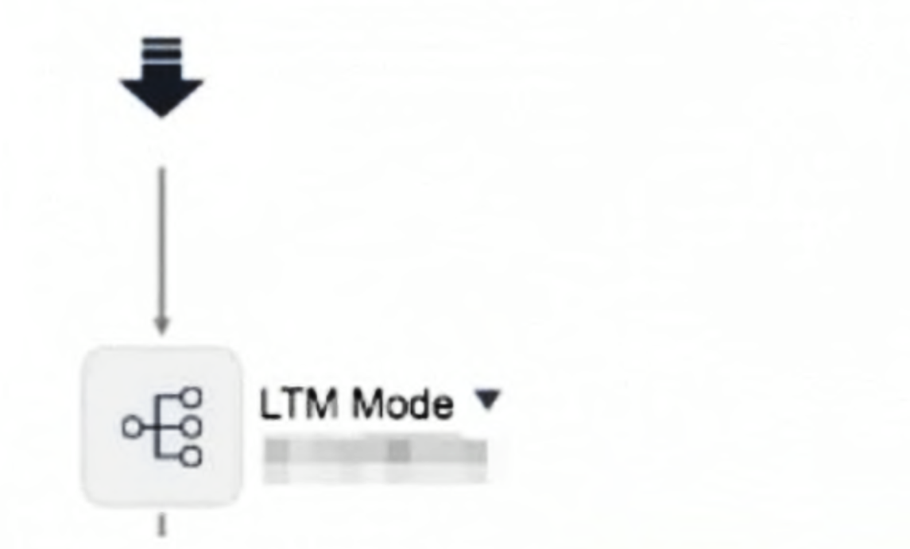
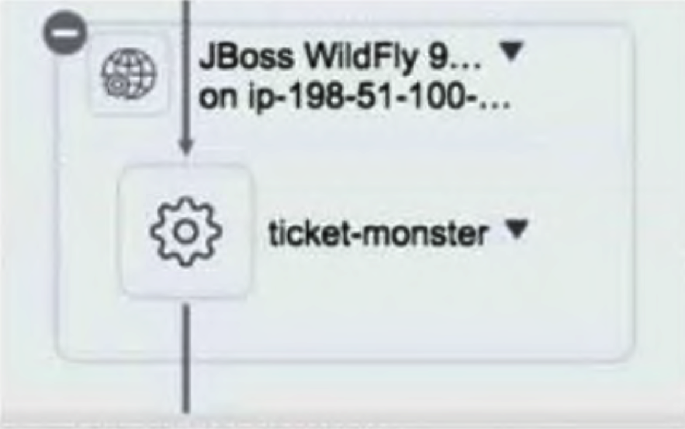

Answers verified with AI using ServiceNow documentation. Exercise your own judgement.
Question 1
Which of the following represents the skills needed that a Service Mapping administrator or implementer should have? (Choose four.)
A. Understanding of XML, Regex, Delimited text, and JSON
B. Understanding of protocols such as HTTP, TCP, SNMP, SOAP, and REST
C. Scripting capabilities with respect to Unix and Windows commands
D. Intermediate or above Windows and Unix administration skills
E. Sufficient skills to build an enterprise web site
F. Understanding of relational database theory
Question 2
Which one of the following ServiceNow application KPIs would improve most as a direct result of having visibility to a service map created through Service Mapping?
A. Problem Management: Number of Incidents per Known Problem
B. Incident Management: Mean Time to Resolve
C. Event Management: Signal to Noise Ratio
D. Change Management: Number of Major Changes
Question 3
How many ServiceNow instances can one MID Server connect to?
A. 1
B. 5
C. Up to 255
D. Unlimited
Question 4
When a Windows Server is reclassified from the Server [cmdb_ci_server] table to the Windows Server [cmdb_ci_win_server] table, which one of the following describes the process that occurred?
A. Class Change
B. Class Upgrade
C. Class Switch
D. Class Downgrade
Question 5
To begin the configuration of tag-based services, tag values must be defined where?
A. Tag categories
B. Tag catalogs
C. Tag-based service families
D. Tag libraries
Question 6
Which of the following are potential benefits when implementing Service Mapping? (Choose four.)
A. Reduced ongoing service map maintenance effort as a result of automated map updates
B. Faster service issue resolution and reduced downtime due to better root cause analysis
C. Improved Software Asset Management capabilities
D. Reduction in effort to create service maps
E. Reduction in change related incidents due to improved service visibility during change planning
F. More accurate alerts from monitoring tools
Question 7
Which one of the following can be used to enable patterns to search for additional attributes and modify discovery logic defined in an Identification Section without modifying the baseline pattern and potentially impacting upgrades?
A. Add step(s) to the pattern’s Identification Section.
B. Add step(s) to the pattern’s Connection Section.
C. Add step(s) to the pattern’s Extension Section.
D. Add step(s) to the pattern’s Update Set.
E. Add step(s) directly to the NDL code.
Question 8
In the image, which one of the following best describes the lower icons?
A. The connections from HAProxy are to other CIs that had errors during discovery.
B. The connections from HAProxy are application clusters.
C. The connections from HAProxy could not be identified and are marked as a Generic Application.
D. The connections from HAProxy are marked as boundaries.
Question 9
Assuming Reconciliation Rules (Reconciliation Definitions) were configured exactly the same for both Data Sources, ServiceNow and ServiceWatch, for the Application [cmdb_ci_appl] table and the following Data Source Precedence Rules are configured. Which one of the following is true?
A. If an Application CI is discovered with a Data Source, ServiceNow, then if the same Application CI is discovered by the Data Source, Altiris, an update will be allowed.
B. If an Application CI is discovered with a Data Source, ServiceWatch, then if the same Application CI is discovered by the Data Source, ServiceNow, an update will be allowed.
C. If an Application CI is discovered with a Data Source, ServiceNow, then if the same Application CI is discovered by the Data Source, ServiceWatch, an update will be allowed.
D. If an Application CI is discovered with a Data Source, ServiceWatch, then if the same Application CI is discovered by the Data Source, Altiris, an update will be allowed.
Question 10
Service Mapping provides visibility to the Operator in Agent Workspace without leaving the Workspace UI. This visibility includes what items associated with the CI? (Choose two.)
A. Releases
B. Problems
C. Incidents
D. Alerts
Question 11
In ServiceNow Discovery, which one of the following phases is the server RAM value discovered?
A. Port scan
B. Classification
C. Classification and Identification
D. Identification and Exploration
Question 12
In Pattern Designer, which one of the following best describes the Create Connection step?
A. Provides information about integrations to the host
B. Provides information about relationships between cluster members
C. Provides information about outbound connections to other CIs
D. Provides information about relationships between the host and installed software
Question 13
Which one of the following best describes the definition of an Entry Point?
A. A method by which a user interacts with a service or a CI interacts with another CI
B. A type of communication taking place between applications
C. A template of attributes that define a communication type between applications
D. A Host::Hosted on relation between CIs
Question 14
In Service Mapping, when discovery is started, what is the execution strategy used to run Identification Sections?
A. Identification Sections are executed randomly until one is successful and if more than one section is successful an error will be displayed.
B. Identification Sections are executed randomly and the data gathered by the successful sections are merged.
C. Identification Sections are executed one by one in the order they are listed and the last section that is successful will be used.
D. Identification Sections are executed one by one in the order they are listed until the first successful match which concludes the Identification phase.
Question 15
Which one of the following Linux commands can be used by a non root user to return the process ID listening on port 8080?
A. sudo netstat -an -p TCP | grep :8080
B. sudo netstat -anp | grep :8080
C. netstat -anp | grep :8080
D. netstat -an -pid * | grep :8080
Question 16
Which one of the following best describes the process that Service Mapping uses to run a command on a target device?
A. Service Mapping provides a task with the command that the MID Server collects, the MID Server executes the command on the target device, and returns the result to the ServiceNow instance in an XML payload.
B. The MID Server decides what command to execute, executes the command on the target device, and returns the result to the ServiceNow instance in an XML payload.
C. Service Mapping sends a request to the target device to execute a command, and the target device returns the result to the ServiceNow instance through the MID Server.
D. Service Mapping sends a request to the target device to execute a command, and the target device returns the result to the ServiceNow instance.
Question 17
In Event Management, which of the following rules allows for automatic task creation?
A. Alert Management
B. Event
C. Task
D. Alert Correlation
Question 18
During ServiceNow Discovery, which one of the following is the approximate number of host IPs that are port scanned with a Discovery Schedule configured with an IP network as shown? 180.181.0.0/16
A. ~5 million
B. ~1 million
C. ~65 thousand
D. ~500,000 thousand
Question 19
ServiceNow only needs Domain user with local admin rights to discover Windows hosts as part of a successful implementation of ServiceNow Discovery, however which of the following targets will not be discovered?
A. Windows Active Directory Servers
B. Windows DHCP Servers
C. Windows Domain Controller Servers
D. Windows DNS Servers
Question 20
Which one of the following is true for variables defined in an Identification Section?
A. Identification Section variables can also be used in all other Identification Sections in any pattern.
B. Identification Section variables can also be used in Parent CI Types.
C. Identification Section variables can also be used in all other Identification Sections in the same pattern.
D. Identification Section variables can also be used in Connection Sections for any pattern.
E. Identification Section variables can also be used in Connection Sections for the same pattern.
Question 21
Which one of the following statements best explains the following URL: https:///SaCmdManager.do?ip=198.51.100.66?
A. The user is starting the Command Line Console and is able to send commands to the host 198.51.100.66.
B. The user is starting the Command Line Console and explicitly directs Service Mapping to use the MID Server 198.51.100.66 to execute commands.
C. This is not a valid URL for Service Mapping.
D. The user is starting the Command Line Console and is able to send commands against the ServiceNow instance at 198.51.100.66.
Question 22
In Service Mapping, which one of the following is true if a target host is already discovered and in the CMDB?
A. The host will be deleted in the CMDB and a new host record will be created during Service Mapping discovery.
B. The host will be immediately rediscovered, but only the changes will be updated in the CMDB during Service Mapping discovery.
C. The host will be immediately rediscovered and updated in the CMDB during Service Mapping discovery.
D. The host will not be rediscovered during Service Mapping discovery.
Question 23
In Service Mapping, when discovery is started, what is the execution strategy used to run Connection Sections?
A. Connection Sections are executed one by one and connections will result from each successful section.
B. Connection Sections are executed randomly and connections will result from each successful section.
C. Connection Sections are executed one by one in the order they are listed until the first successful section.
D. Connection Sections are executed one by one in the order they are listed with a connection created from the last successful section.
Question 24
Which one of the following is a public IP Address?
A. 172.20.5.9
B. 225.16.0.5
C. 192.168.100.100
D. 10.0.6.8
Question 25
Given the CMDB class structure shown, which types of Configuration Items (CIs) will be included in a report run against the Server [cmdb_ci_server] table?
A. CIs defined directly in Server [cmdb_ci_server] table and all parent classes
B. CIs defined directly in Server [cmdb_ci_server] table and all child classes
C. CIs defined directly in the Server [cmdb_ci_server] table
Question 26
Which one of the following best represents the output from the following Regular Expression? ([\w\d\-\.]+)
A. Match a single character in the list between one and unlimited times.
B. Match a single character in the list one time.
C. Match a single character in the list between one and three times.
D. Match a single character in the list between one and ten times.
Question 27
Which one of the following describes how a MID Server communicates with a ServiceNow instance?
A. Initiates on HTTPS
B. Responds on HTTPS
C. Responds on HTTP
D. Initiates on HTTP
Question 28
Assuming the Apache Web Server Identification Rule (CI Identifier) is configured as shown with the following Criterion attributes:
Class -
Configuration file -
Version -
Yesterday, an Apache Web Server CI was discovered as part of Service Mapping. Today, the application owner upgraded the Apache Web Server to a different version and reran discovery of the service. What will happen in the CMDB?
A. A duplication error will occur.
B. A new Apache Web Server CI is created.
C. The existing Apache Web Server CI will be reconciled with the upgraded Apache Web Server CI and its version will be updated.
D. The Apache Web Server CI will be reclassified as a Web Server CI.
Question 29
Within the CMDB, all application CI Types/Classes are children of which parent class?
A. Database Instance [cmdb_ci_db_instance]
B. Software [cmdb_ci_software]
C. Installed Software [cmdb_ci_installed_software]
D. Application [cmdb_ci_appl]
E. Licenses [cmdb_ci_license]
Question 30
In Service Mapping, which one of the following best describes the process of discovery after an Entry Point is configured?
A. For each pattern that supports the Entry Point Type, run identification Sections until one finishes successfully and then run each Connection Section for the pattern.
B. For each pattern that supports the Entry Point Type, run all the identification Sections that finish successfully and then run each Connection Section for the pattern.
C. For each pattern that supports the Entry Point Type, run identification Sections until one finishes successfully and then run Connection Sections until one finishes successfully.
D. For each pattern that supports the Entry Point Type, run all the Identification Sections and run all Connection Sections.
Question 31
When using the Pattern Designer, a Regular Expression parsing strategy is available from which operation?
A. Set variable
B. Match
C. Create connection
D. Parse file
Question 32
Using Pattern Designer, which one of the following Delimited Text Parsing Strategies could be used to parse CO from the string? Location,Denver,CO
A. Delimiter of a comma and position 3
B. Delimiter of Location, and position 2
C. Delimiter of Denver and position 2
D. Delimiter of a comma and position 2
Question 33
In Event Management, if a Message key is not passed from an Event, which of the following Alert fields combine to populate the Message key on an Alert?
A. Task, Description, Created
B. Node, Type, Resource, Number
C. Source, Number, Task
D. Source, Node, Type, Resource
Question 34
In Service Mapping, when an application is identified as a Generic application, which one of the following is the cause?
A. No Pattern Identification Section matches
B. No Pattern Identification and Connection Section matches
C. No Identification Rule exists
D. No Pattern Connection Section matches
Question 35
Which address is required for Service Mapping to discover a Load Balancer that does not previously exist in the CMDB?
A. Management IP address
B. MAC address
C. Public IP address
D. MIB address
Question 36
Which one of the following Regular Expressions could be used to parse the value 5.2.0 from the string? Version 5.2.0
A. Version (\.*)
B. Version\s+(\d+\.\d+\.\d+)
C. Version (\d+)
D. Version (\d+).(\d+).(\d+)
Question 37
Which of the following reasons would a prospect consider purchasing ServiceNow Event Management? (Choose three.)
A. Determine impacted services from a given event/alert.
B. Provide software deployment capabilities to patch problem infrastructure.
C. Automatically generate incidents for certain classes of alerts.
D. Provide state of the art monitoring capabilities across a wide array of different types of infrastructure.
E. Consolidate events from disparate monitoring tools into a consolidated central system.
Question 38
When running Service Mapping discovery, which of the following represents the root cause of the error? “Failed to access target system. Access is denied”
A. SSO authentication error
B. CLI permissions error
C. Applicative permissions error
D. Windows authentication error
Question 39
Which one of the following ECC Queue records contains the XML payload returned from the MID Server that will be processed by the ServiceNow instance?
A. Input, Pending
B. Input, Ready
C. Output, Pending
D. Output, Ready
Question 40
Assume an Apache Web Server Identifier Entry is configured as shown:
If the Apache Web Server Discovery Pattern has a step configured to collect the Configuration file data but NOT configured with a step to collect the Version information, what will happen when executing a Service Mapping discovery?
A. An identification error will occur.
B. The Apache Web Server CI will be reclassified as a Web Server CI.
C. The Apache Web Server configuration item will be discovered successfully and either inserted or updated in the CMDB.
D. A duplication error will occur.
Question 41
Which one of the following describes when the MID Server config.xml file is read and used?
A. Config.xml file updated and saved
B. Config.xml file created and saved
C. MID Server application stop
D. MID Server application start
Question 42
In Service Mapping, which one of the following must be available or created in advance, in order to be able to create a Discovery Pattern?
A. Process Classifier
B. Identification Rule
C. CI Type/Table
D. Application Service
Question 43
Which one of the following is a valid format when entering SSH Private Key credentials?
A. PEM
B. PGP
C. PDP
D. PMI
Question 44
Which one of the following best describes what will happen if Discovery is configured with 3 MID Servers in a Load Balance Cluster with Shazzam cluster support disabled?
A. All three MID Servers will be used during the Port Scan phase and all three will be used during the classification phase.
B. Only one MID Server will be used during the Identification phase and all three will be used during the exploration phase.
C. Only one MID Server will be used during the Port Scan phase and all three will be used during the classification phase.
D. All three MID Server will be used during the Identification phase and only one will be used during the exploration phase.
Question 45
In the following image of the Discovery Log, the green S represents which one of the following?
A. A library in the Connection Section of a pattern
B. A step in the Connection Section of a pattern
C. A step in an Identification Section of a pattern
D. A library in an Identification Section of a pattern
Question 46
In Service Mapping, which one of the following icons represents a credential error on the Service map?
A. Yellow triangle
B. Generic application
C. Question mark
D. Red stop sign
Question 47
Which of the following are methods used to initiate discovery on a service? (Choose three.)
A. Map multiple services suggested by Service Mapping by discovering the load balancers in an enterprise.
B. Map multiple services by importing entry points from a CSV file.
C. Map a single service defined by configuring an entry point.
D. Map services suggested by the discovery of MID Servers in an enterprise.
E. Map services based on Assets stored in the CMDB.
Question 48
In Service Mapping, which one of the following can be useful in determining which Patterns, Identification Sections, Connection Sections, and Steps are tried?
A. Workflow Log
B. Discovery Log
C. System Log
D. ECC Log
Question 49
Which one of the following represents what the MID stands for in MID Server?
A. Monitoring, Integration, and Discovery
B. Management, Integration, and Discovery
C. Management, Instrumentation, and Discovery
D. Monitoring, Instrumentation, and Discovery
E. MID is not an acronym.
Question 50
Which one of the following is the most common risk that can negatively impact a Service Mapping engagement?
A. The customer external firewall does not meet the requirements needed for the Service Mapping MID Server to communicate with their ServiceNow Instance.
B. MID server resource requirements are beyond capacity of the customer.
C. Customer security team is not made aware early enough in the engagement of the credential requirements.
D. Customer is not using Active Directory for credential authentication.
Question 51
A defined relationship between two Configuration Items (CIs), such as Runs on, Depends On, or Contains is called a what?
A. CI Attribute
B. Application to Application Relationship
C. Relationship Type
D. CI Dependency
Question 52
Which of the following are benefits a service map can bring during an Incident resolution? (Choose three.)
A. Quickly identifies any recent incidents that occurred on components of the impacted service.
B. Narrows down possible affected components when a service is impacted.
C. Helps reduce the number of unplanned changes in a customer environment.
D. Helps pinpoint code errors after a faulty application is identified.
E. Quickly identifies any recent changes performed on components of the impacted service.
Question 53
Which one of the following in the CMDB Identification and Reconciliation application allows a CMDB administrator to specify authorized data sources that can update a CMDB table or a set of table attributes?
A. Reclassification Tasks
B. Identification Rules
C. Datasource Precedence Rules
D. Reconciliation Rules
Question 54
You have run Service Mapping discovery against a customer service and discovered the CI in the image. The customer indicates that Apache should have an outgoing connection to Tomcat. Which one of the following could be the issue?
A. No Connection Section is defined for Apache to Tomcat.
B. Process is offline for Tomcat.
C. No Tomcat CI Type is defined.
D. No Identification Rule is defined for Tomcat.
E. Credentials are not configured for Tomcat.
Question 55
After discovering load balancers in a customer environment, service candidates may appear on the Service Mapping Home page under which one of the following tiles?
A. Map
B. Fix
C. Approve
D. Completed
E. Review
Question 56
Which one of the following best represents the breadth of types of Configuration Items (CIs) discovered by running Service Mapping?
A. Hardware, Installed Software, Network Gear
B. Physical Components, Logical Components, Certificates
C. Applications, Licenses, IP Addresses
D. Cloud Services, Applications, CI Relationships
E. Hardware, Licenses, CI Relationships
Question 57
When building a Discovery Pattern, which one of the following operations results in a termination of the Identification or Connection Section if a condition is not met?
A. Set Parameter Value
B. Merge Table
C. Filter Table
D. Match
Question 58
Which of the following are created automatically when using the map option Create pattern from generic application?
A. Discovery Pattern, CI Type/Class, Process Classifier
B. CI Type/Class, Process Classifier, Identification Rule
C. Process Classifier, Connection Section, Discovery Pattern
D. Identification Rule, CI Class/Class, Identification Section
Question 59
When using a Delimited Text Parsing Strategy, what delimiter and position will parse 2014 from the string? 2014/02/07-17:49:36
A. Delimiter of space and position 1
B. Delimiter of / and position 0
C. Delimiter of / and position of 1
D. Delimiter of 2014 and position 1
Question 60
In Service Mapping, which one of the following best describes the process of discovery after an Entry Point is configured?
A. For each pattern that supports the Entry Point Type, run all the Identification Sections and run all Extension Sections.
B. For each pattern that supports the Entry Point Type, run Identification Sections until one finishes successfully and then run all Extension Sections for the pattern.
C. For each pattern that supports the Entry Point Type, run all the Identification Sections that finish successfully and then run each Extension Section for the pattern.
D. For each pattern that supports the Entry Point Type, run Identification Sections until one finishes successfully and then run Extensions Sections until one finishes successfully.
Question 61
In Service Mapping, which can be useful in determining what Patterns, Identification Sections, Connection Sections, and Steps are tried?
A. Pattern Log
B. ECC Log
C. Service Mapping Log
D. Discovery Log
Question 62
In Service Mapping, which icon represents a credential error on the Service map?
A. Yellow triangle
B. Yellow circle
C. Red circle
D. Red triangle
Question 63
If a customer wants to track a new hardware configuration item within a dedicated new table, where there is no baseline class defined, which one can be performed?
A. Create a new table by extending the Configuration Item [cmdb_ci] table
B. It is never recommended to build a new table
C. Create a new table by extending the Task [task] table
D. Create a new table by extending the Application [cmdb_ci_appl] table
Question 64
Which Service Mapping technique is appropriate for small application services that rarely change and require high availability?
A. Tag-Based Mapping
B. Dynamic CI Group
C. Manual Services
D. Top-Down Mapping
Question 65
A single MID Server can connect to how many ServiceNow instances?
A. One
B. Up to 255
C. Up to maximum allowable memory
D. 10
Question 66
For Service Mapping and Discovery, new and updated patterns become available between ServiceNow releases from which of the following sources?
A. ServiceNow Doc Site
B. ServiceNow Store
C. ServiceNow Now Support
D. ServiceNow Community
Question 67
When building a Discovery Pattern, which operation results in a termination of the Identification or Connection Section if a condition is not met?
A. Get Process
B. Match
C. Parse URL
D. Get Registry Key
Question 68
Which omitted action will keep changes to a discovery pattern connection section from taking effect?
A. Publishing the updated pattern
B. Saving the updated pattern
C. Exporting the updated pattern
D. Saving the updated connection section
Question 69
When planning for a Service Mapping engagement and deploying MID Servers into a customer environment, which outbound port must be open from the customer environment to allow the MID Server(s) to communicate to the customer ServiceNow instance hosted in the ServiceNow cloud?
A. 8080
B. 443
C. 80
D. 636
E. 25
Question 70
Which one of the following describes the three minimum components needed to discover a service containing baseline supported operating systems, infrastructure, and applications?
A. MID Server, IP Range, and Subnet Mask
B. MID Server, IP Range, Entry Point
C. MID server, Entry Point, and Credentials
D. MID Server, Entry Point, and Subnet Mask
Question 71
Which value is defined for the Discovery source field when an application is discovered by Service Mapping?
A. Discovery
B. Application Service
C. ServiceNow
D. Service Mapping
Question 72
Reconciliation Rules for the Application [cmdb_ci_appl] table are configured exactly the same for the following data sources and the priorities are configured as listed. - ServiceNow - Priority 100 - Altiris - Priority 200 - SCCM - Priority 300 Which one of the following is true?
A. If an Application CI is discovered by ServiceNow, then the same Application CI is discovered by Altiris, an update is allowed
B. If an Application CI is discovered by ServiceNow, then the same Application CI is discovered by SCCM, an update is allowed
C. If an Application CI is discovered by Altiris, then the same Application CI is discovered by ServiceNow, an update is allowed
D. If an Application CI is discovered by Altiris, then the same Application CI is discovered by SCCM, an update is allowed
Question 73
What is a primary Service Mapping feature using machine learning-powered mapping?
A. It builds application clusters using tag-based conditions.
B. It relies on traffic-based information to predict service maps.
C. It requires manual addition of configuration items.
D. It uses patterns to identify configuration details.
Question 74
Which one of the following describes how often the ServiceNow instance sends a synthetic transaction via the Heartbeat probe to a MID Server?
A. Every 1 minute
B. Every 5 minutes
C. Every 10 minutes
D. Every 3 minutes
Question 75
In a Discovery Pattern, which of the following configurations would allow a step in an Identification Section to be skipped and have the pattern continue to the next step?
A. Set a precondition on a step such as "1 Equals 2"
B. Select the option "Terminate if not found"
C. Set a temporary variable in the step called "skip"
D. Enable Debug Mode
Question 76
Which one of the following describes the basis of how ServiceNow Discovery primarily classifies computers?
A. WMI
B. CPU Type
C. Operating System
D. NetBIOS name
Question 77
Which Service Mapping technique uses patterns to identify configuration details and establish process-to-process connections?
A. Tag-Based Mapping
B. Top-Down Mapping
C. Manual Services
D. Dynamic CI Group
Question 78
Which is the most common risk that can negatively impact a Service Mapping engagement?
A. The MID server resource requirements are beyond capacity of the customer
B. The customer is not using Active Directory for credential authentication
C. The customer security team is not made aware early enough in the engagement of the credential requirements
D. The customer external firewall only communicates on outbound port 80 and 443
Question 79
Which Service Mapping technique eliminates the need for a license and provides quick visualization through list filters or CMDB queries?
A. Top-Down Mapping
B. Dynamic CI Group
C. Tag-Based Mapping
D. Manual Services
Question 80
What is the primary role of Predictive Intelligence in Service Mapping?
A. To identify application fingerprints to evaluate their relationships with CIs
B. To execute scheduled jobs to initiate application service mapping
C. To calculate the confidence level of application fingerprint connections
D. To monitor the readiness state of prerequisites
Question 81
Service Mapping uses which table to build tag-based maps from?
A. Application [cmdb_ci_appl]
B. Application Service [cmdb_ci_service_discovered]
C. Servers [cmdb_ci_servers]
D. Key Value [cmdb_key_value]
Question 82
Which one of the following is a characteristic of a service in the context of ServiceNow Service Mapping?
A. Never contains cloud based elements
B. May not always be written to the CMDB
C. Often comprised of more than 50 configuration items
D. Performs a single or few limited specialized operations
Question 83
Which one of the following describes the result of the following UNIX command? cat /home/ubuntu/lbappinfo
A. List all files and directories under the lbappinfo directory
B. Determine if a file starting with lbappinfo exists in the ubuntu directory
C. Display any lines in the lbappinfo file containing the word cat
D. Display the contents of the file lbappinfo
Question 84
What information does the Top 10 Service Issues report display in ML-powered Service Map-ping?
A. The training status of application fingerprints percentage
B. A summary of all active scheduled jobs
C. A list of application services most affected by ML-related issues
D. The readiness status of all application services affected by ML-related issues
Question 85
Which one of the following describes the relationship between the Application Server [cmdb_ci_app_server] table and the Application [cmdb_ci_appl] table?
A. Application Server [cmdb_ci_app_server] table is the base table to the Application [cmdb_ci_appl] table
B. Application [cmdb_ci_appl] table is extended from the Application Server [cmdb_ci_app_server] table
C. Application Server [cmdb_ci_app_server] table is the child table to the Application [cmdb_ci_appl] table
D. Application Server [cmdb_ci_app_server] table is the parent table to the Application [cmdb_ci_appl] table
Question 86
Which describes the common set of protocols used by Service Mapping to discover target CIs?
A. LDAP, SNMP, HTTP
B. SSH, SMTP, HTTP
C. SSH, SMTP
D. WMI, SSH, SNMP
Question 87
When configuring SNMP credentials, which of the following is true? (Choose two.)
A. Only SNMP v1/v2 is supported
B. SNMP v1/v2/v3 is supported
C. SNMP Read Only account is required
D. SNMP Read/Write account is required
Question 88
In Service Mapping Pattern Designer, which operation is used to create outgoing connections?
A. Parse connection
B. Create URL
C. Match connection
D. Create reference
E. Create connection
Question 89
Which of the following ServiceNow Store applications provide customers with new patterns outside of a major product release?
A. Discovery and Service Mapping Patterns
B. CMDB CI Class Models
C. Service Graph Data Visualizer
D. ITOM Visibility Pattern Extensions
Question 90
In ServiceNow Discovery, which one of the following phases is responsible for mapping applica-tion to host relationships?
A. Port Scan
B. Classification
C. Identification
D. Exploration
Question 91
Which of one of the following best describes what Datasource Precedence Rules are?
A. Consists of one or more Identifier Entries that specify the Criterion attributes that uniquely identify a CI
B. Reclassifies CIs into parent or child tables
C. Allows the ability to assign a priority to data sources if multiple data sources are authorized to update the same table or table attributes
D. Specifies the order of which data sources can create records in the CMDB
Question 92
What information is required to discover a service in Service Mapping?
A. MID Server, Network Diagram, Entry Point
B. Credentials, Application name, MID Server
C. MID Server, IP Range, Load Balancer
D. Credentials, MID Server, Entry Point
Question 93
After running Service Mapping discovery you receive the following error: Service Mapping Error: Failed to identify CI on host myHostName The application port 1433 is closed Which one of the following describes the reason for the error?
A. The application process is NOT up and running on the host
B. The Discovery Pattern is NOT configured to collect information on the port
C. The Identification Rule is NOT configured correctly
D. The Entry Point is NOT configured correctly
Question 94
Which one of the following regular expressions can be used to capture 198.51.100.207 from the following string? jdbc:198.51.100.207
A. jdbc:([\d\.]+)
B. jdbc:([\d[1-3]+\.+])
C. jdbc:([\d]+)
D. jdbc:([\d\.+])
Question 95
In Pattern Designer, when using the Parse File operation, which of the following are parsing strategies?
A. Delimited Text, XML File, Regular Expressions, Command Line Unix Style
B. Delimited Text, XML File, Debug Mode, Command Line Unix Style
C. Regular Expression, Position From End, String Search Point, Ini File
D. Vertical File, XML File, Delimited File. Database File
Question 96
What describes the functionality of ServiceNow Discovery?
A. Performs Vertical Discovery
B. Performs Up Down Discovery
C. Performs Horizontal Discovery
D. Performs Top Down Discovery
Question 97
The Ignite application you are trying to discover requires credentials that are different from the host operating system. Which one of the following best describes how to enter the credentials?
A. Add the credential to the Credentials table and choose type “Applicative” and the appropriate CI Type for the Ignite application
B. In the Identification Section of the Pattern for the Ignite CI Type, choose the Change user operation and enter the credentials in the appropriate fields
C. Add the credentials to the appropriate Ignite CI Type attributes
D. Add the credential to the Credentials table and choose type “Other” and the appropriate CI Type for the Ignite application
Question 98
Which scheduled job is installed with the Service Mapping Plus (sn_sm_scoped_app) applica-tion?
A. Update business service status
B. Update statistics for application service readiness dashboard
C. Update query based services
D. Generate entry point candidates from netflow and netstat data
Question 99
What information does the confidence level provide on the Application Service Readiness Dash-board?
A. The probability of a connection belonging to application services
B. The frequency of scheduled jobs for a connection
C. The readiness state of all prerequisites
D. The probability of servers hosting the application
Question 100
Which one of the following is the default time interval a MID Server checks for upgrades?
A. 15 minutes
B. 30 minutes
C. 5 minutes
D. 60 minutes
Question 101
Which of one of the following best represents a well thought out and scalable configuration se-lection of Criterion attributes for a new application Identification Rule (CI Identifier) taking into account an application upgrade or the potential that the application is installed more than once on the same server?
A. Class, Installation Directory
B. Class, Configuration File Name
C. Class, Discovery Source
D. Class, Version
E. Class, Last Discovered
Question 102
When building a Connection Section using Pattern Designer, which host would you configure in Debug Mode to help you discover the connection information from Host A to Host B?
A. Host B
B. Neither Host A or Host B
C. Host A and Host B
D. Host A
Question 103
A customer has recently placed check scanners in some of their branches across Europe. The scanners send the scanned images of the checks to the bank’s datacenter through a web service that goes through an F5 load balancer. The images then go through the bank’s Apache web serv-ers and are processed by an application server named ImageSmart. Eventually the images are stored in a cluster of Oracle databases. The bank’s tellers log into ImageSmart through a Citrix Portal and have the capability to review the checks and approve them. Which one of the following represents most accurately how many business services and entry points are involved in this process?
A. One service and one entry point
B. One service and two entry points
C. Two services and one entry point
D. Two service and two entry points
Question 104
In Service Mapping, which one of the following represent the sections that comprise a Discovery Pattern?
A. Process Detection. Identification Section, and Extension Section
B. Entry Point, Identification Section, Connection Section
C. Host Detection, Entry Point, Identification Section
D. Identification Section, Connection Section, and Extension Section
Question 105

In the following image, the black arrow at the top indicates which one of the following?
A. The firewall protecting the service
B. The connection from the upstream service
C. The router interface to the service
D. The entry point to the service
Question 106
Which represents the three overall calculated CMDB health scores displayed on the CMDB Health Dashboard?
A. Compliance, Completeness, Audit
B. Compliance, Correctness, Reconciled
C. Correctness, Completeness, Duplicates
D. Compliance, Correctness, Completeness
Question 107

In the following image, which one of the following best represents how the ticket-monster application is presented?
A. as a subordinate Service
B. as an exclusion
C. as a cluster member
D. as an inclusion
Question 108
Which one of the following Identifier Entry configuration options must be set to true to attempt a match using the Application Rule Identification Rule if no match is found using a more specific Identification Rule?
A. Allow fallback to parent’s rules
B. Allow null attribute
C. Criterion attributes
D. Applies to
E. Independent
Question 109
Which one of the following best describes what a MID Server is?
A. Operating System
B. JAR File
C. Agent
D. Java Application
Question 110
Which one of the following represent items that can be created from the CI Class Manager?
A. Service Candidates, Identification Rules, Data Refresh Rules, Dependency Rule
B. Tables & Columns, Identification Rules, Identifier Entries, Dependencies and Reconciliation Rules
C. Identification Rules, Tables & Columns, Dependency Rules, Service Groups
D. Identifier Entries, Process Classifiers, Reconciliation Rules, Data Refresh Rules
Question 111
Which one of the following lists best describes a multi-tier architecture of an actual service?
A. Load Balancer > Web Server Cluster > Database > Application Server Cluster
B. Load Balancer > WebSphere MQ > Database > Web Server Cluster
C. Load Balancer > Web Server Cluster > Application Server Cluster > Database
D. Load Balancer > Web Server Cluster > Middleware > Database > Application Server Cluster
Question 112
In the image, which one of the following best describes what is happening?
A. The administrator is using the Command Line Console to determine if this host has any processes with a process ID of 8080
B. The administrator is using the Command Line Console to count how many processes are listening
C. The administrator is using the Command Line Console to determine if this host has any processes using port 8080
D. The administrator is using the Command Line Console to determine if the MID Server is communicating
Question 113
From the Discovery Pattern list, using the Action on selected rows option called Export pat-terns with CMDB items, an update set is created containing the modified pattern and which of the following related items? (Choose three.)
A. Extension Section
B. Identification Rules
C. Reconciliation Rules
D. CIs with a Discovery Source of ServiceWatch stored in the Configuration items[cmdb_ci] ta-ble
E. CIs with a Discovery Source of ServiceWatch stored in the Application[cmdb_ci_appl] table
Question 114
In ServiceNow Discovery, which one of the following typically query target hosts to gather dis-covery data?
A. 3P Scripts
B. Sensors
C. Classifiers
D. Probes
Question 115
Which of the following ServiceNow modules must you navigate to in order to convert legacy business services into application services in bulk rather than individually?
A. Application Services
B. Business Applications
C. Services
D. Applications
Question 116
During ServiceNow Discovery, which one of the following is created after a credential is suc-cessfully used for the first time to access a device?
A. Credential Vault
B. Credential Lock
C. Credential Affinity
D. Credential Store
Question 117
In order for Service Mapping to successfully discover UNIX targets, which SSH credential can be granted with limited privileges to a user?
A. RDP privileges
B. root privileges
C. domain access and local administrator privileges
D. WMI privileges
E. selective sudo (or sudo equivalent) access
Question 118
Which one of the following represents the output of the regular expression - (\d{2}:\d{2}:\d{2}) on the following string? 2014/02/07-17:49:36
A. 174936
B. 17:49
C. 49:36:00
D. 17:49:36
Question 119
Which of the following Regular Expressions would capture the host, port, and path from the following MySQL connection string? jdbc:mysql://localhost:3306/myDatabase?profileSQL=true
A. *\/\/([\w\.]+):(\d+)\/(\w+)
B. *:\/\/([\w\.-_]+):(\w+)\/(\w+)
C. *:\/\/(\d{1,3}.\d{1,3}.\d{1,3}.\d{1,3}+):(\d+)
D. jdbc:mysql:\/\/([\w\.]):(\d+)\/(\w+)
Question 120
An entry point is configured for an application service, with application load balancer being the first target. Which is the key cause if the application load balancer is not discovered?
A. There is no Identification Section correctly configured for the load balancer.
B. There is no Connection Section correctly configured for the load balancer to downstream CIs.
C. There is no valid credential configured for the load balancer.
D. The entry point given is a user-facing IP and it needs to be replaced with the management IP.
Question 121
What role does Predictive Intelligence play in ML-powered Service Mapping?
A. It generates connection suggestions based on processed data.
B. It monitors the performance of scheduled jobs.
C. It activates and manages ADME probes for discovery.
D. It displays the readiness status of application services.
Question 122
Which one of the following ServiceNow Discovery phases is responsible for determining if a device should be created or updated in the CMDB?
A. Port Scan
B. Identification
C. Reconciliation
D. Classification
Question 123
Which of one of the following best describes what Reconciliation Rules (Reconciliation Defini-tions) are?
A. Consists of one or more Identifier Entries that specify the Criterion attributes that Uniquely identifies a CI
B. Specifies which data sources can update a configuration item (CI) or set of CI attributes
C. Tracks duplicate CIs until resolved
D. Reclassifies CIs into parent or child tables
Question 124
From the Dependency View map, which of the following buttons must be selected to view the related services for a configuration item?